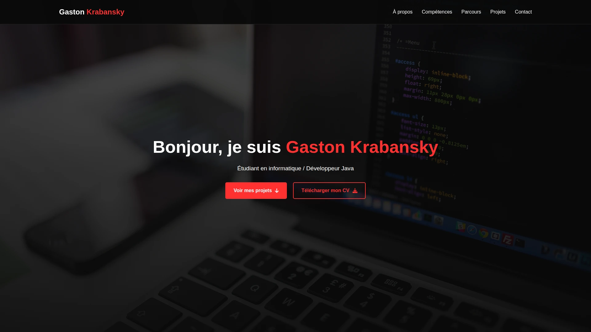

Il s'agit du site que vous êtes en train de consulter : mon site web personnel, développé en HTML, CSS et JavaScript pur, sans framework, afin de garder un code simple et facile à faire évoluer moi-même. Ayant peu d'expérience avec le front-end, et n'étant pas un web designer qualifié, ce site a été conçu avec l'aide d'IA génératives, puis affiné et personnalisé par mes soins.
Le site est structuré en pages statiques HTML, avec des feuilles de style et scripts communs
partagés (dossier assets/), pour garder un code aéré et compréhensible que je peux
continuer à alimenter régulièrement.